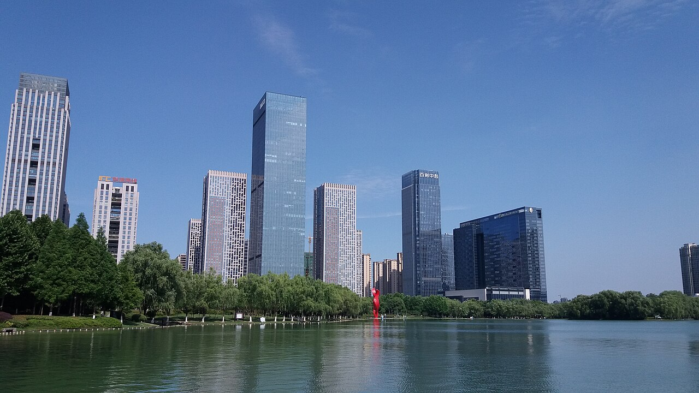

MEMBER 01
商徐炜
学号：SA26225270
中国科学技术大学
软件工程
从巢湖的水色到城市的天际线，从庐州故事到街巷美食，认识这座古老而年轻的安徽省会。

合肥位于安徽省中部、长江与淮河之间，是安徽省省会。城市与巢湖相依，南淝河穿城而过，连接起湖泊、绿地与城市生活，也承载着江淮地区的人文记忆。
2024 年末全市常住人口，按全市行政区域统计，非仅中心城区人口。
查看人口数据来源 ↗巢湖与湖畔湿地展现自然风光；三河古镇以河流、古桥和街巷呈现水乡风貌。走进包公园，或漫步天鹅湖畔，又能看到合肥历史与现代生活交织的另一面。
合肥古称庐州，三国故事与包公文化是理解城市历史的线索。古镇街巷延续着地方记忆，高校与科研机构则为城市增添求知与创新的气息，传统和现代在这里相遇。
庐州烤鸭、吴山贡鹅、李鸿章大杂烩与鸭油烧饼，都是认识本地饮食的入口。也可以走进淮河路步行街与罍街，在热闹街巷中感受合肥的日常烟火气。